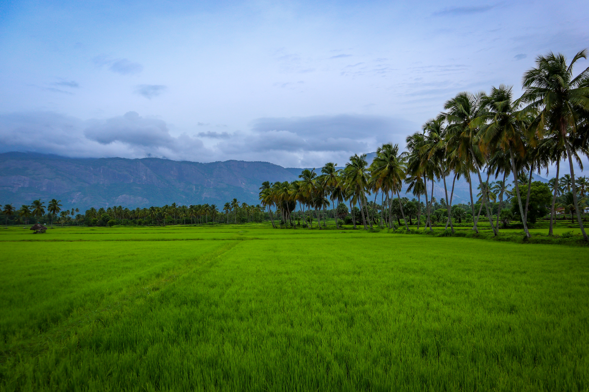

Live with the Nature
Explore the alluring charm of Kuttanad

Backwaters of Alappuzha
Enjoy life in a houseboat at the Venice of the East

Athirapally Waterfalls
Opulent wildlife, chattering waterfalls, endangered species, captivating hill station...